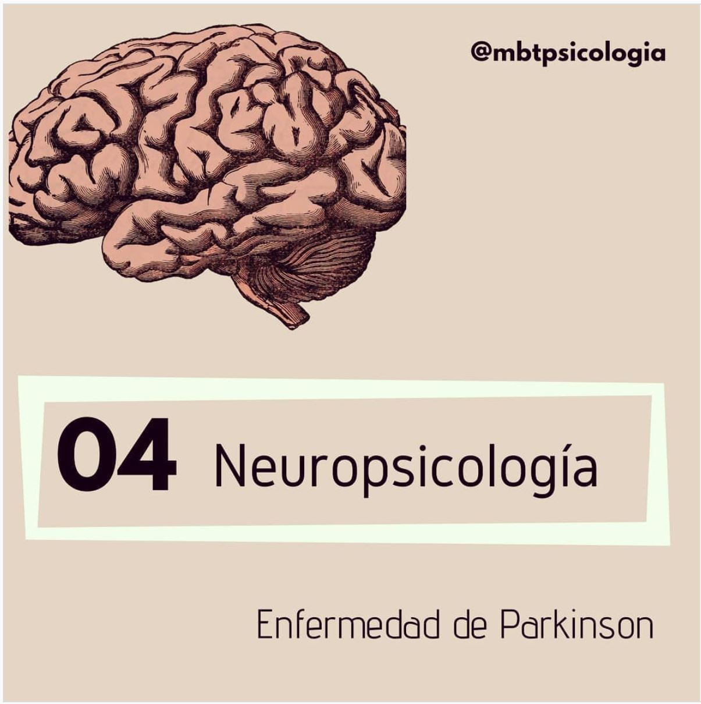

ü߆ PARKINSON

Con motivo del Día Mundial del Parkinson, me ha parecido oportuno hablar un poquito de esta enfermedad, pues se trata de la segunda enfermedad neurodegenerativa más frecuente, después de la Enfermedad de Alzheimer.
üîπ¬øQu√© es la EP? Se trata de un trastorno NEUROL√ìGICO degenerativo, cr√≥nico, progresivo y lento. Forma parte de las llamadas enfermedades del movimiento porque su caracter√≠stica principal es motora.
üî∏El diagnostico de la EP es esencialmente CL√çNICO. Se basa principalmente en la sintomatolog√≠a motora y en la respuesta al tratamiento farmacol√≥gico. El problema de este diagnostico es que los s√≠ntomas son variables y no totalmente exlusivos de la EP. Hay m√°s enfermedades que afectan al movimiento como la de Huntington, por ejemplo.
üîπAvanza de forma PROGRESIVA. A medida que se avanza en los estadios de la enfermedad (clasificaci√≥n motora), se va produciendo una afectaci√≥n del neocortex, lo que puede llevar a la aparici√≥n de DETERIORO COGNITIVO e incluso demencia ‚û°Ô∏è recordamos que la demencia se puede producir por diferentes enfermedades, no es una enfermedad en s√≠ misma.
üî∏Pese a que las caracter√≠sticas m√°s notable son motoras (TEMBLOR en reposo, RIGIDEZ muscular, bradicinesia o LENTITUD de movimiento, alteraciones en la postura), NO TODAS est√°n presentes en todas las personas con la enfermedad. Se puede, por ejemplo, tener EP sin temblor en reposo ‚òùüèª.
üîπLos s√≠ntomas NO MOTORES m√°s frecuentes, adem√°s de las alteraciones cognitivas y emocionales, son las disfunciones auton√≥micas, sensoriales, gastrointestinales y los trastornos del sue√±o. De nuevo, no todos est√°n presentes en todas las personas que lo presentan (no tiene por qu√© conllevar deterioro cognitivo).
üëâüèªLa intervenci√≥n farmacol√≥gica es fundamental en el tratamiento de la sintomatolog√≠a motora, pero una intervenci√≥n MULTIDISCIPLINAR (terapia ocupacional, fisioterapia, neuropsicolog√≠a y psicolog√≠a cl√≠nica) es clave para ralentizar la progresi√≥n de la enfermedad y MEJORAR LA CALIDAD DE VIDA de las personas que lo presentan.

OTROS ARTÍCULOS